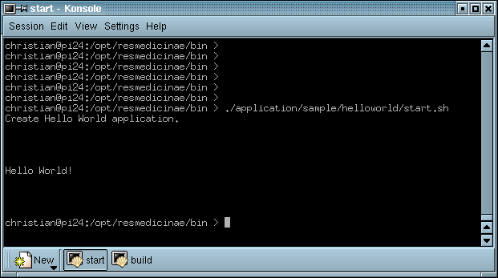

3 Launcher Class
Actually, it is bad design to start an application from a static main method within that application itself.
We want to implement an independent component that doesn't know where it is called from.
If the application is to be treated as a component, it should rather be started from another, external component, sometimes referred to as container.
Since there is no such external container at the moment, the HelloWorldLauncher.java class will serve as a replacement.
This class contains nothing but one static main method.
It can be used to run the HelloWorldControllerImpl application.
Simply remove the main method from the HelloWorldControllerImpl.java class and
add it to the new HelloWorldLauncher class.
The controller class contains no methods now.
You will have to run the HelloWorldLauncher instead of the HelloWorldControllerImpl now,
on command line or per shell/batch script.
Our sample screenshot hasn't changed yet.

| Next | Contents | Next |
Copyright (c) 1999-2002. The Res Medicinae Webmasters. All rights reserved. GNU FDL license. Last Update: 06.05.2002